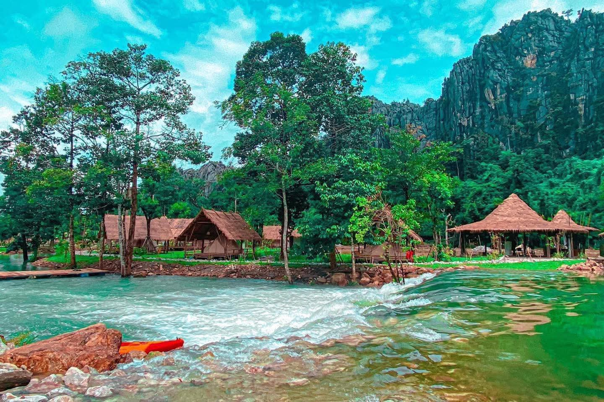
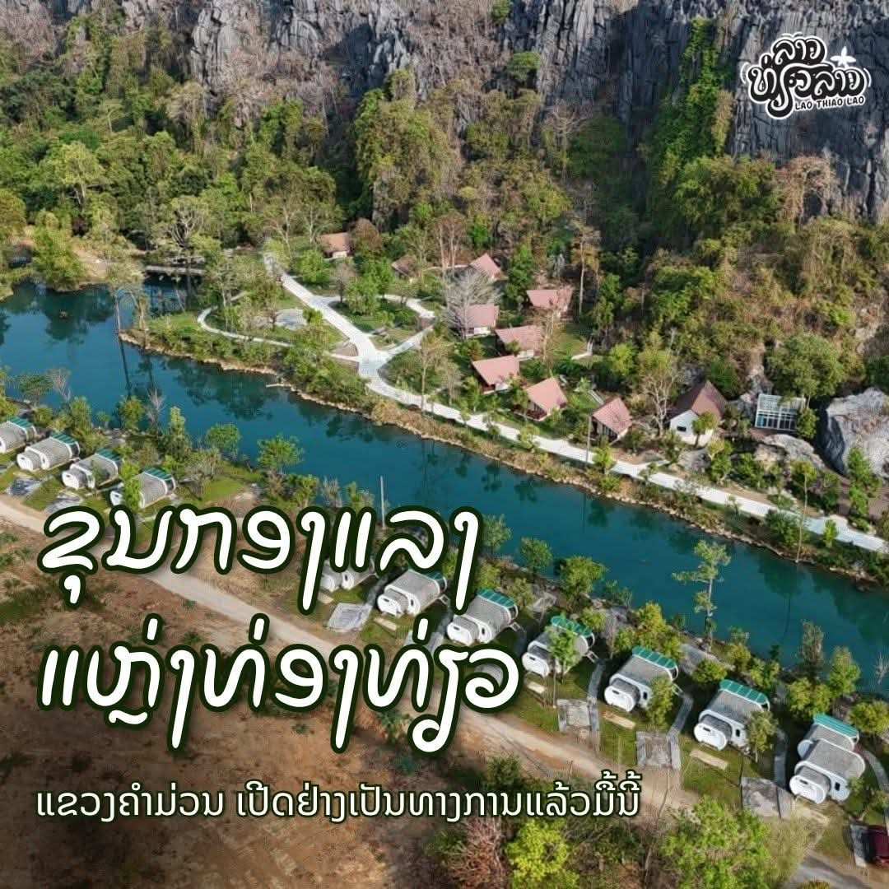
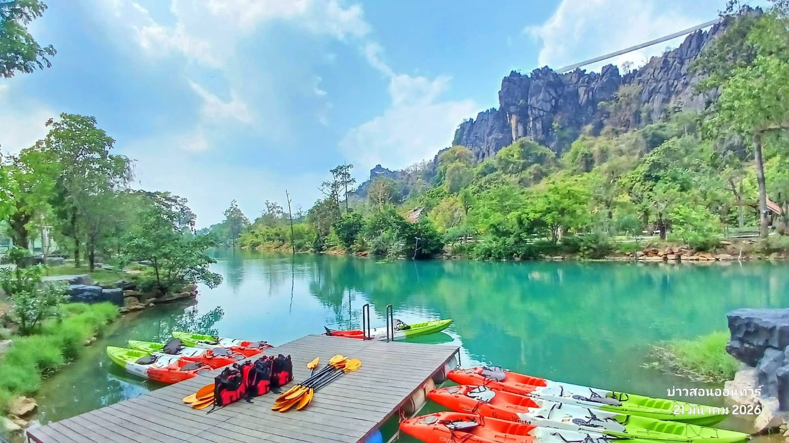
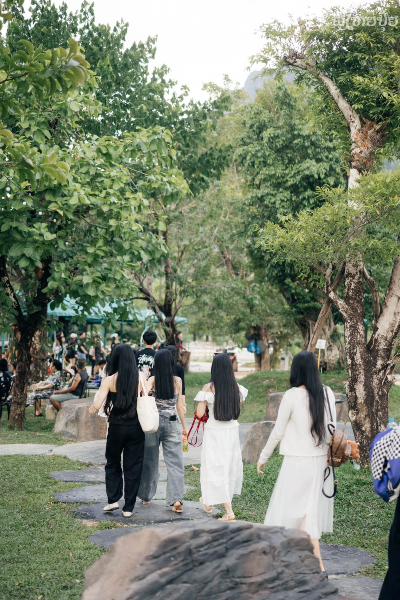
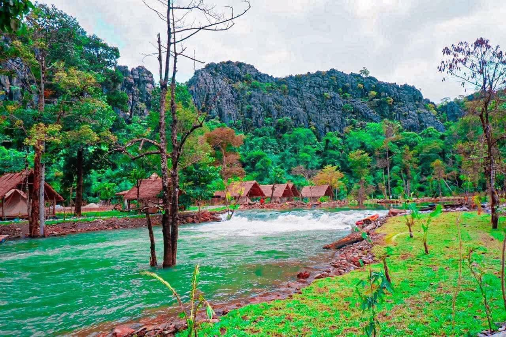

ກິດຈະກຳຍອດນິຍົມ
1. ລົງຫຼິ້ນນ້ຳ & ແຊ່ນ້ຳເຢັນສົດຊື່ນ
ຜ່ອນຄາຍຮ່າງກາຍດ້ວຍການລົງລອຍນ້ຳໃນໜອງນ້ຳສີຟ້າໃສເຢັນສະບາຍ ທ່າມກາງຮົ່ມໄມ້ຂຽວງາມ ແລະ ອາກາດບໍລິສຸດ.
ສຳຜັດຄວາມມະຫັດສະຈັນຂອງໜອງນ້ຳສີຟ້າອົມຂຽວທີ່ໃສເຢັນ ອ້ອມຮອບດ້ວຍພູຫີນປູນ ແລະ ທຳມະຊາດອັນບໍລິສຸດ
ສຳຫຼວດກິດຈະກຳທັງໝົດ
ຂຸນກອງແລງ ຕັ້ງຢູ່ເມືອງຫີນບູນ ແຂວງຄຳມ່ວນ ເປັນແຫຼ່ງທ່ອງທ່ຽວທຳມະຊາດທີ່ກຳລັງໄດ້ຮັບຄວາມນິຍົມ. ຈຸດເດັ່ນແມ່ນໜອງນ້ຳທຳມະຊາດທີ່ມີສີຟ້າອົມຂຽວໃສສະອາດ ໄຫຼອອກມາຈາກຕີນພູຫີນປູນ ໃຫ້ບັນຍາກາດສົດຊື່ນ ແລະ ງຽບສະຫງົບ.
ເໝາະສຳລັບການພັກຜ່ອນກັບຄອບຄົວ, ໝູ່ເພື່ອນ ຫຼື ຜູ້ທີ່ມັກການທ່ອງທ່ຽວແບບໃກ້ຊິດທຳມະຊາດ ແລະ ຫຼິ້ນກິດຈະກຳທາງນ້ຳ.
ມ່ວນຊື່ນໄປກັບຫຼາກຫຼາຍກິດຈະກຳທ່າມກາງທຳມະຊາດທີ່ສວຍງາມ ພ້ອມມຸມຖ່າຍຮູບສຸດປະທັບໃຈ

ຜ່ອນຄາຍຮ່າງກາຍດ້ວຍການລົງລອຍນ້ຳໃນໜອງນ້ຳສີຟ້າໃສເຢັນສະບາຍ ທ່າມກາງຮົ່ມໄມ້ຂຽວງາມ ແລະ ອາກາດບໍລິສຸດ.

ສຳຫຼວດຄວາມງາມຕາມສາຍນ້ຳດ້ວຍການພາຍເຮືອ ຫຼື ນອນລອຍຫ່ວງຢາງຊົມທິວທັດສອງຝັ່ງນ້ຳ ແລະ ກ້ອນຫີນທຳມະຊາດ.

ເກັບພາບຄວາມຊົງຈຳກັບສີນ້ຳຟ້າ-ຂຽວທີ່ຕັດກັບພູຫີນປູນ ແລະ ຂົວໄມ້/ຈຸດຊົມວິວຕ່າງໆ ທີ່ຖ່າຍມຸມໃດກໍງາມ.

ນັ່ງພັກຜ່ອນຢູ່ຕູບແຄມນ້ຳ ຫຼື ໃຕ້ຮົ່ມໄມ້ ຮັບປະທານອາຫານທ້ອງຖິ່ນແຊບໆ ພ້ອມຟັງສຽງນ້ຳໄຫຼ ແລະ ສຽງນົກຮ້ອງ.
ກຽມຊຸດຫຼິ້ນນ້ຳ, ຜ້າເຊັດຕົວ, ຖົງກັນນ້ຳສຳລັບໂທລະສັບ ແລະ ເກີບທີ່ຍ່າງສະດວກບ່ອນປຽກ.
ໃສ່ເສື້ອຊູຊີບທຸກຄັ້ງເມື່ອລົງນ້ຳເລິກ ຫຼື ພາຍເຮືອ ແລະ ລະມັດລະວັງບ່ອນໂຂດຫີນລື່ນ.
ຊ່ວຍກັນຮັກສາຄວາມສະອາດ ບໍ່ຖິ້ມຂີ້ເຫຍື້ອລົງນ້ຳ ເພື່ອໃຫ້ຂຸນກອງແລງສວຍງາມຕະຫຼອດໄປ.